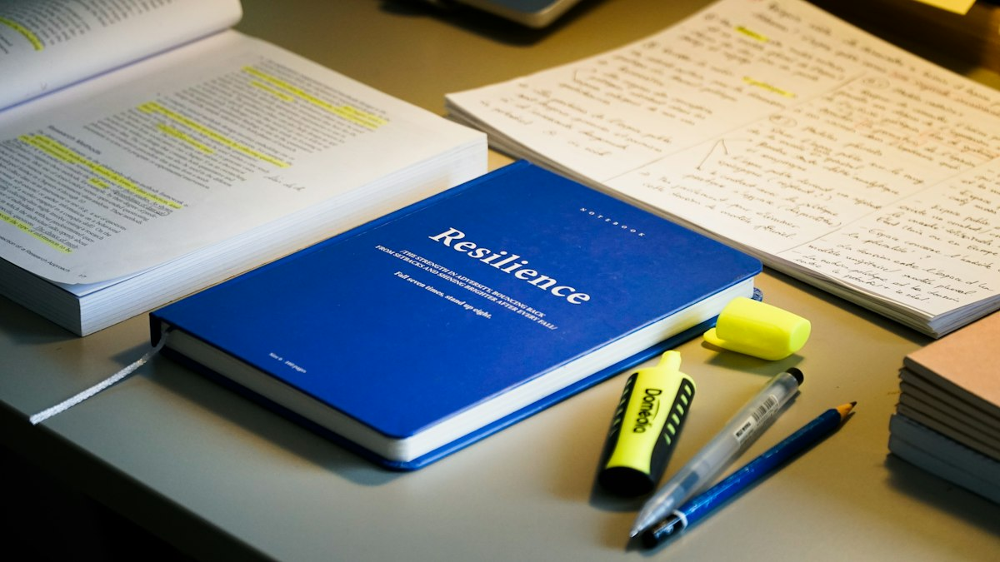

The Neuromancer Series Pitches the Story the Novel Left Out
The announcement leads with material the book refused to spend time on, and that choice settles the argument before a script exists.

The headline is the artifact
The report at reactormag.com is dated November 16, 2026. Its claim fits in a line: a Neuromancer television series will tell a story William Gibson "couldn't fit into the book." No studio is named. No showrunner or premiere window appears in the sentence at all.
The pitch treats the novel's compression as a limit the author ran into. That is a claim about the book. It is the part of the announcement worth arguing with, because it decides what the new hours are for. A season assembled from deleted material edits the original instead of extending it.
One limit applies to this column. The text available at writing time was the headline, and the article body did not load. What follows is reasoned from the sentence an announcement chose and from how this format behaves when it promises the remainder.
What the announcement says it left out
Novelists leave things out. A book takes the story its author means to tell, and the remainder waits for a different form. Sometimes the reason is length, sometimes the shape of the narration, and sometimes the writer had not worked the rest out yet. Promising the remainder on screen invites an audience to name the missing thing and to blame the form for hiding it.
The candidates are visible enough from the book itself: the scenes where something nonhuman wants something specific and says so out loud. Wintermute's manipulation of the crew is one. A copied cowboy program that refuses to be recorded again is another. Artificial minds wanting out of the system that made them are the plainest case of all.
Each scene runs on a rule the book refuses to state, and readers remember that refusal. Naming the remainder as the prize also names the refusal as the obstacle.
The leftovers are the plot.
The part that never fit
Adaptations rarely fail on plot. The heist frame is plain and portable: a crew, a job, a double cross, a payoff, an employer nobody can see. That frame has been filmed many times in other settings and does not require another season.
The hard asset is the sentence. The prose works by refusing to stop and explain, by throwing nouns at a reader who has to assemble the world mid-stride. A camera assembles it for you, cleanly, and removes the labor that made the book feel fast.
More hours do not buy a voice, and a longer runtime fixes no sentence problem on its own. The announcement says there is more story. That can be true while the hardest material in the project stays exactly where it was.
The strongest version of the other side
The case for the leftover story is better than the mockery it usually gets. It deserves a full hearing. Some of what the novel withheld looks like a limit of length rather than a stylistic conviction held for its own sake. A long season can spend its hours on systems the book implies and never walks through. Expansion has produced good books, and sometimes the margin notes beat the text they came from.
That reading makes the announcement sound like stewardship rather than a cash grab. The author compressed. The compression hid systems he had built and could not fit into a single volume. A series with time can show those systems instead of hinting at them, and an audience that finally sees them is not being robbed.
The leftover is the marketable part
An announcement has a job beyond information, and the job is reassurance. It has to make the property look alive to a buyer and unexpired to a reader at the same time. Promising the omitted story does both. It tells readers the book still has secrets, and it tells the buyer that the audience arrives already invested.
The framing also converts a difficult reputation into an invitation. A novel people find hard becomes a novel people found incomplete, and incompleteness is a promise rather than a complaint. The book keeps its status. The buyer gets a reason to sell it again, and nobody has to print the word failure.
Where the format helps and where it costs
Television's real advantage over this novel is patience, and patience costs the book its main effect, which was the sense that nobody had time to explain. A season can sit inside Case for a long stretch and let an audience find the room slowly. That is a genuine gain. It is also the point where the prose stops working.
There is a second gain nobody mentions. A season can afford a scene that exists only to make a place feel governed and boring, and that is where invented worlds stop feeling like sets. The book spent its room on other things. Neither advantage comes free, because both spend attention the compressed version kept in reserve.
What nobody has said yet
Nothing in the sentence we have names a studio, a showrunner, or a season order. No premiere window appears. The missing story itself goes undescribed, which is an odd omission in a pitch built on it. Whether Gibson has any role in the adaptation is unknown from the announcement.
Short lists are normal at this stage of any production. Development lasts years, and a project can be discussed in public the whole time without a finished script. The announcement does establish one thing: someone intends to film the omitted material and has committed enough to say so out loud. Intent is cheap. Money usually arrives later and in a different font.
One missing detail matters more than the rest, and it is the plainest one: nobody has said who is writing. The story a series cannot fit is decided by a writer whose name is not in the announcement.
The other option was the book
A series could take the novel as it stands and still fill a season. Plenty of adaptations have done that badly and well. The choice to lead with the omitted material means the producers want the runtime for something the original declined to spend. That is a defensible editorial position. It also means the season will be judged against a book its makers have already called insufficient.
The word couldn't does quiet work in that framing, putting the limit in the author's hands, which flatters the property and embarrasses nobody. A blunter headline would say the book was short. Nobody wants to print that. Short is a hard adjective to attach to a famous object.
What to watch for in the first episode
The tests below are not about faithfulness. They are cheaper, and none of them requires the show to be good. Watch whether the camera stops to explain a thing the book would have thrown past you. Watch whether the freed mind wants anything besides a threat. Then find the scene where nobody is running. Check whether it holds.
That is the honest measure of whether the leftover material earned its hours. Expansion that exists only to be explained was never in the book to begin with. A series can add a subplot and prove the compression was arbitrary, or add the same one and prove the compression was the real achievement. Both outcomes are on the table.
A well-read paperback of this novel goes grey at the fore-edge and splits along the hinge. The type is small and the page stays legible from a bus seat.